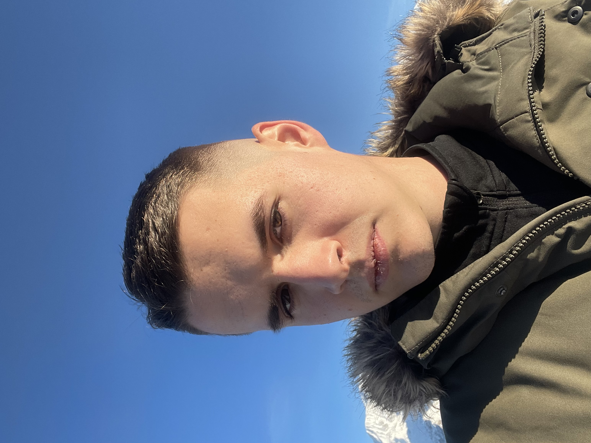

Bienvenue sur mon blog !
Moi c'est Judikaël !, je suis étudiant à l'ESDES en 3 ème année de bachelor entreprenariat et développement des affaires et en alternance en tant que business developer !
A propos de moi 👦
Dans la vie, je suis assez dynamique et motivé, dans la vie je m'intéresse un peut à tout, j'aime decouvrir de nouvelles choses. J'aime particuliérement le foot et le sport en géneral. Venant de la montagne je pratique aussi beaucoup le ski.
Les voyages sont aussi trés important pour moi, decouvrir de nouvelles cultures, de nouvelles manières de vivre et de nouveaux paysages. C'est une réel source d'insipiration pour moi, ma plus belle aventure fut mon voyage à Cape Town en afrique du sud, parti aprés mon bac et encore 17 ans j'ai passé la plus belle année de ma vie dans cette merveilleuse ville.
J'aime beaucoup partager des moments avec mes proches. Les amis et la famille sont super important pour moi, bien s'entourer et primordiale pour réussir dans la vie, et je pense etre entouré des bonnes personnes pour m'épanouir et réussir dans la vie !